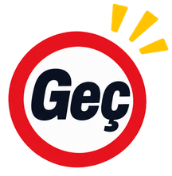

Sınavı Geç
Ehliyet
Ehliyet sınavına hazırlanmanın kolay yolu
Sınavı Geç: Ehliyet, MEB e-sınav formatına uygun deneme sınavları, konu testleri ve gerçek trafik işaretleriyle ehliyet sınavına hazırlanmanı sağlayan ücretsiz bir iPhone uygulamasıdır.
✔ 50 soruluk, 45 dakikalık deneme sınavları
✔ Trafik, İlk Yardım, Motor ve Trafik Adabı konu testleri
✔ Görselli trafik işareti soruları ve işaret kartları
✔ Yanlışlarını tekrar etme ve geçmiş sınav sonuçları